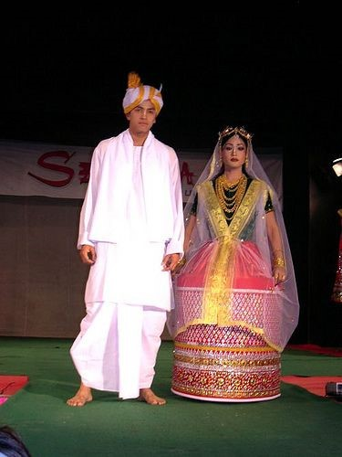
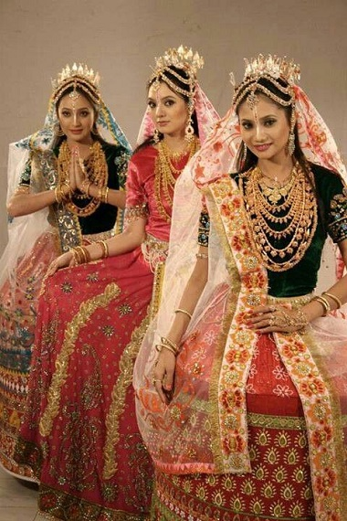
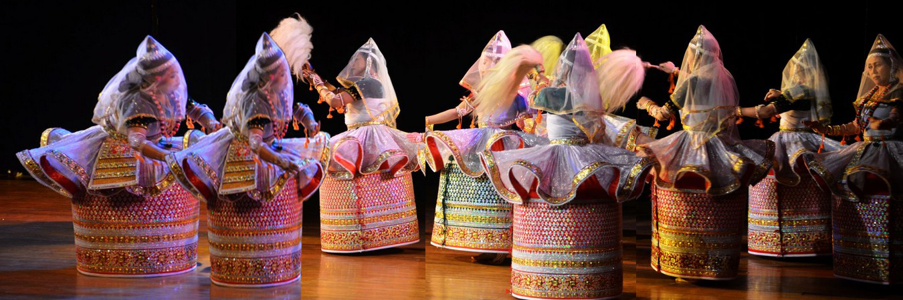
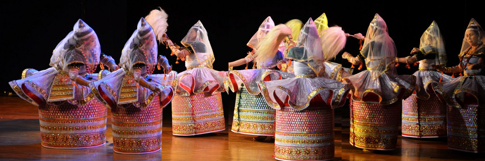
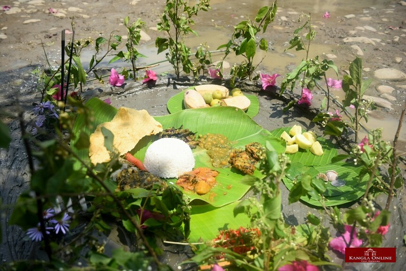

Manipur
- Home
- Food

- Fashion
 
- Festival
- Cheiraoba Festival
- Chumpha Festival
 

Chumpha Festival
Manipur, the land of merriment, is always busy with one festival or the other throughout the year. Different cultures and races in Manipur have different festivals to celebrate and each is rejoiced with an equal passion and zeal. It is the Tanghul Nagas of Manipur who celebrate the Chumpha Festival, one of their most popular and fêted festivals. The Chumpha Festival in Manipur is a harvest festival and is held with a lot of rejoicing and merriment.
Cheiraoba Festival
On the lap of Himalaya lies a picturesque state named Manipur. This state is famous for its scenic beauty, silent hills and green vegetation. The state is an isolated land from the main land yet it bears a rich heritage and culture. Manipur , the small state in north eastern part of India is the store house natural resources. The solitary hills of Himalaya, the deep gorge and the innocent people make a perfect combination as a tourist spot. Tourists visiting Manipur will surely get impressed with their traditional customs and heritage which still shows their individuality and uniqueness. - Chumpha Festival
- Cheiraoba Festival